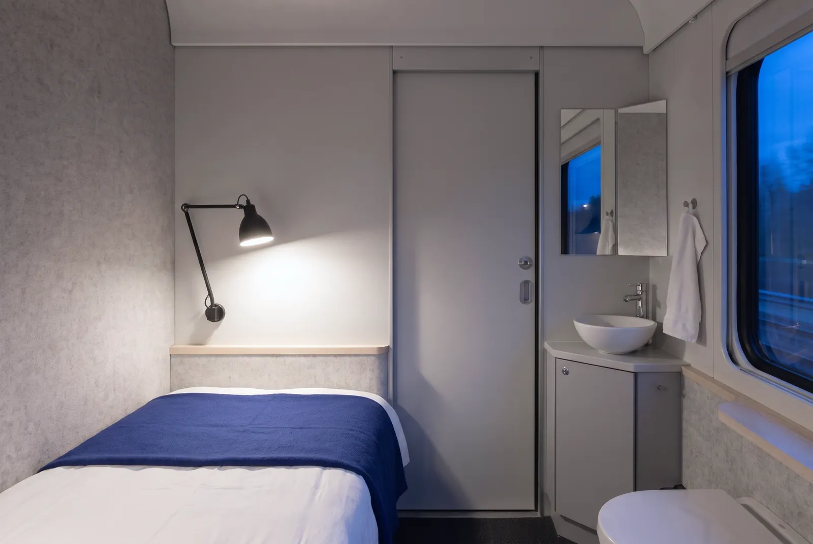
1인실
혼자 문을 잠그고 잡니다. 세면대와 변기가 방 안에 있습니다.
- 침대
- 190 × 80 cm, 하나
- 방 안에
- 세면대, 변기, 옷걸이, 콘센트 두 개
- 한 편성에
- 객차 3량, 30실
129,000원, 한 칸
금·토 밤 149,000원
밤 11시 5분, 높바람역에서 침대에 눕습니다. 눈을 뜨면 아침 7시 5분, 마파람역입니다. 여덟 시간 동안 일부러 천천히 달립니다. 반대 방향 2호는 마파람에서 밤 11시 10분에 떠납니다.
높바람 출발
8시간, 412 km 매일 밤 1인실 129,000원부터
마파람 도착
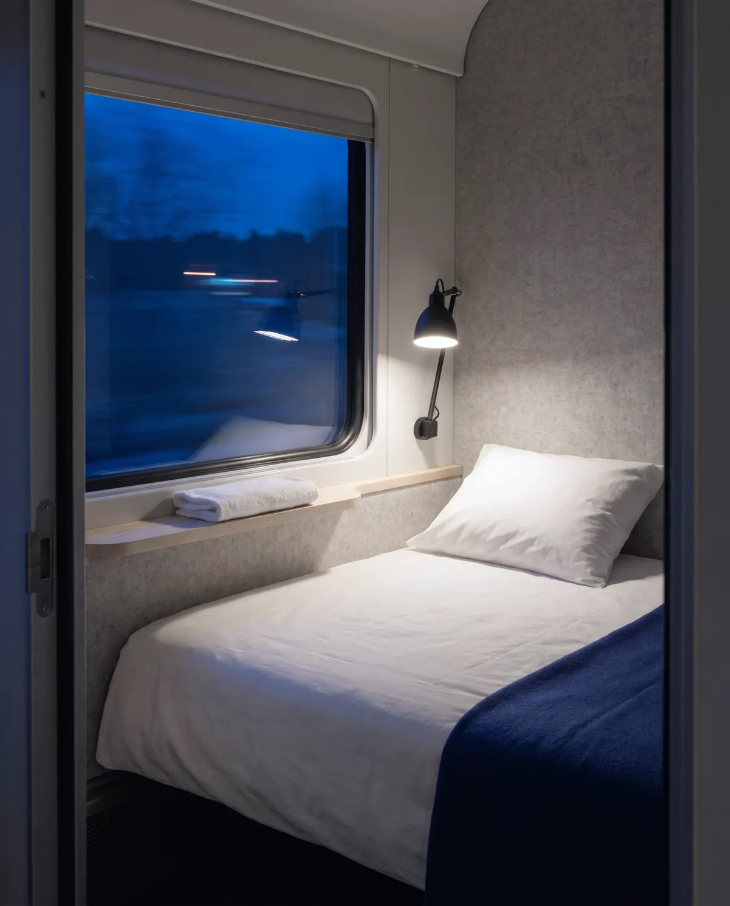
매일 밤 두 편이 서로 반대 방향으로 떠납니다. 날짜를 고르면 그날 밤 요금과 남은 자리가 나옵니다. 금요일과 토요일 밤은 요금이 조금 높습니다.
| 편 | 출발 | 도착 | 걸리는 시간 | 객실 | 요금 (원) | 남은 자리 | 고르기 |
|---|---|---|---|---|---|---|---|
| 1호 높바람 → 마파람 | 23:05 | 07:05 | 8:00 | 1인실 | 129,000 | — | |
| 2호 마파람 → 높바람 | 23:10 | 07:15 | 8:05 | 1인실 | 129,000 | — |
〃 위 칸과 같음. 요금은 1인실·2인실은 한 칸, 4인 침대칸은 한 자리 값이며 침구, 세면도구, 아침 차와 빵이 들어 있습니다.
출발 25분 전부터 탈 수 있습니다. 남은 자리는 예시로 보여 드리는 값입니다.
1호 기준입니다. 2호는 5분에서 10분씩 늦습니다.
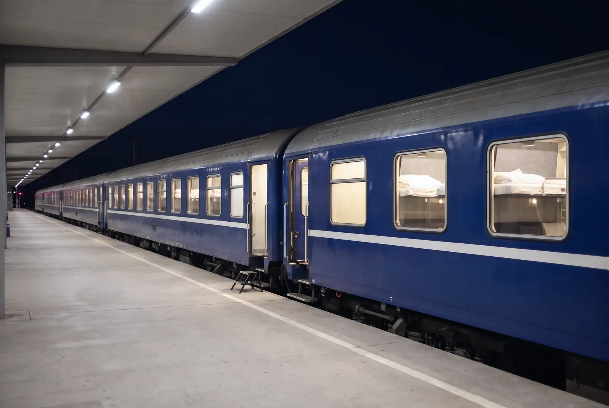
출발 25분 전부터 탈 수 있습니다. 표를 내밀 필요 없이 이름을 말하면 객실까지 안내합니다. 큰 가방은 침대 밑 서랍에 들어갑니다.
출발 안내 방송은 한 번뿐입니다. 객실 문은 안에서 잠그고, 블라인드는 끝까지 내려옵니다. 시트와 베개는 그날 낮에 세탁한 것입니다.
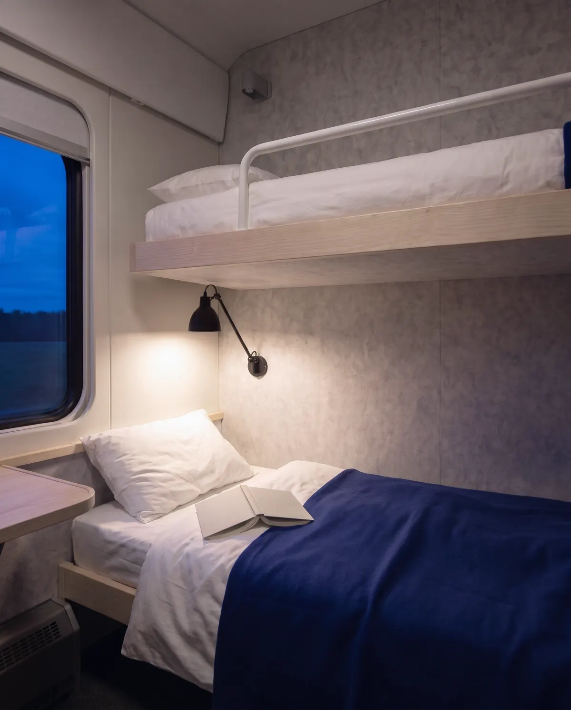
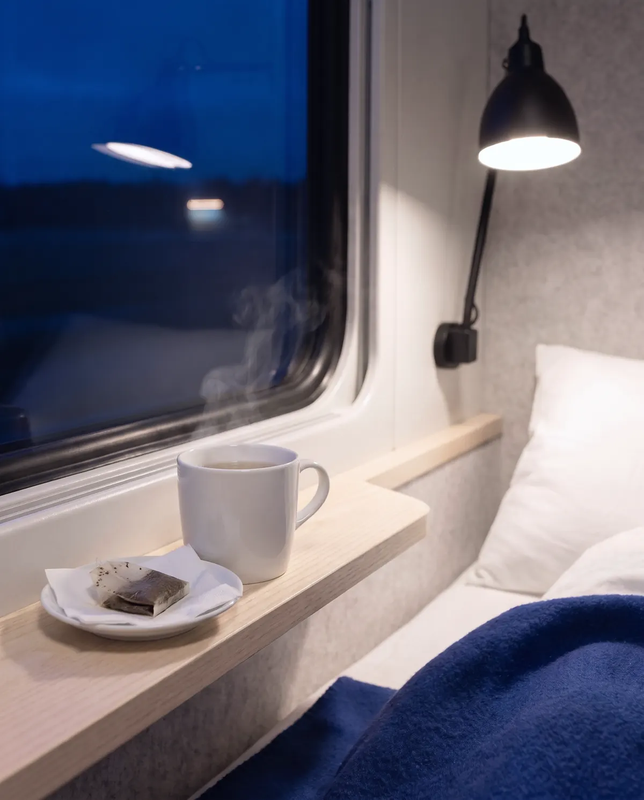
출발하고 25분쯤 지나면 승무원이 문을 한 번 두드리고 객실로 차를 가져다 드립니다. 밤에는 카페인이 든 음료와 술을 팔지 않습니다.
자정이 되면 복도 등이 어두운 파란빛으로 바뀌고, 아침 6시까지 안내 방송을 하지 않습니다. 새벽 2시 10분 고요목에서 45분 동안 멈춰 서서 기관사가 바뀝니다. 이때는 문을 열지 않습니다.
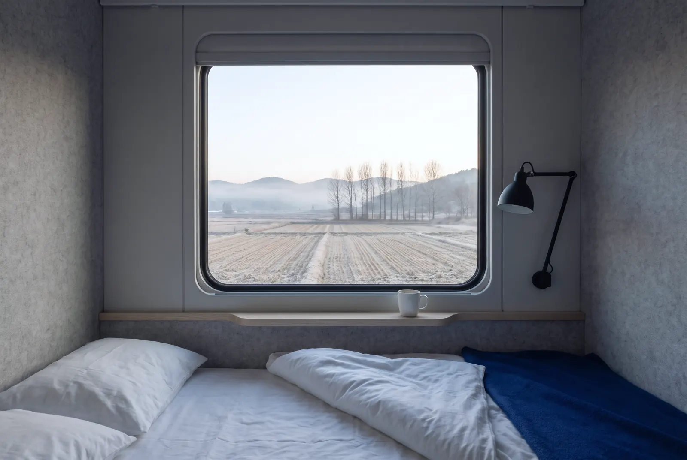
이슬재를 지날 무렵 해가 뜹니다. 깨워 달라고 하면 승무원이 내리기 40분 전에 문을 두 번 두드립니다.
객실마다 수건과 세면도구가 있고, 샤워실은 객차마다 하나 있습니다. 아침 차와 빵 두 개는 요금에 들어 있습니다.
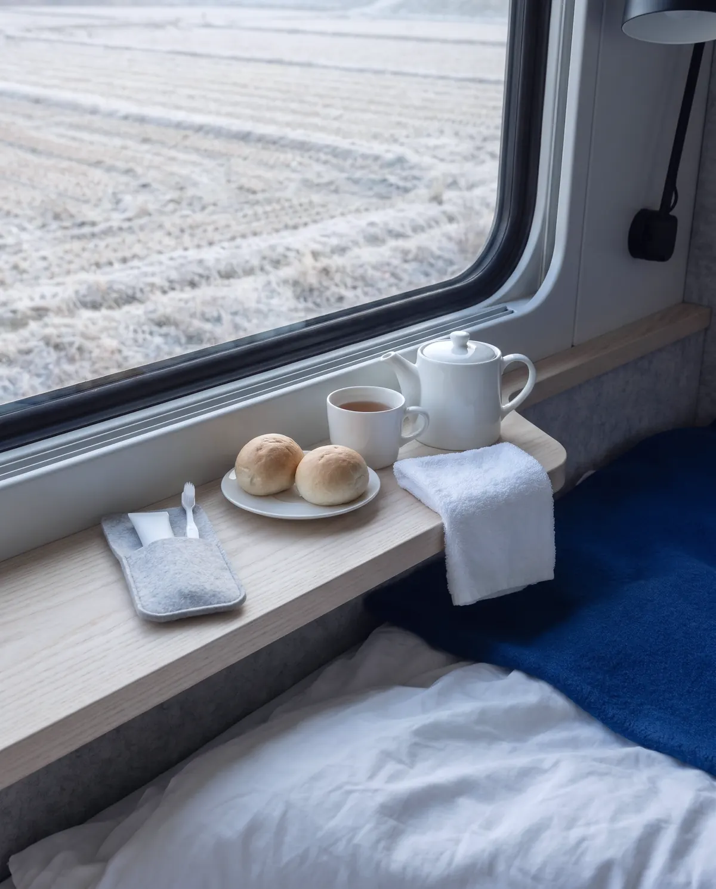
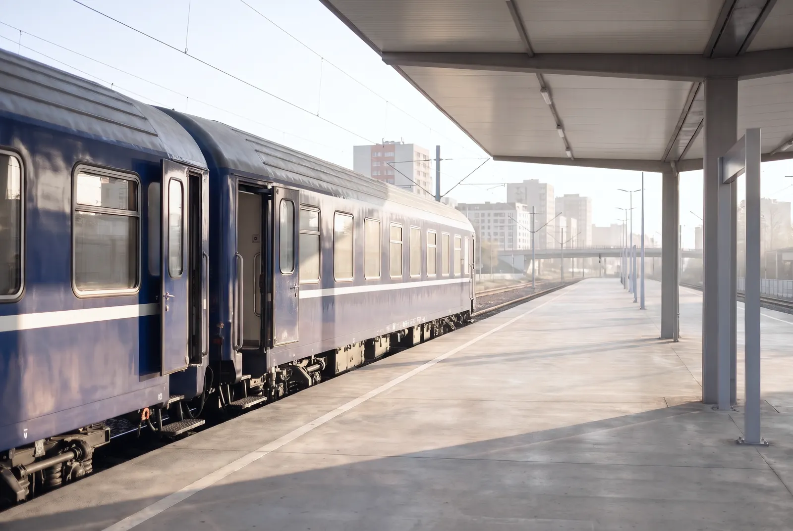
역이 도심 한가운데 있어 내려서 바로 출근할 수 있습니다. 내린 뒤 한 시간 동안은 역 2층 밤차 라운지에서 씻고 짐을 맡길 수 있습니다.
어느 객실이든 침구는 같습니다. 그날 세탁한 면 시트와 베개, 그리고 파란 양모 담요. 다른 것은 넓이와 문입니다.

혼자 문을 잠그고 잡니다. 세면대와 변기가 방 안에 있습니다.
129,000원, 한 칸
금·토 밤 149,000원
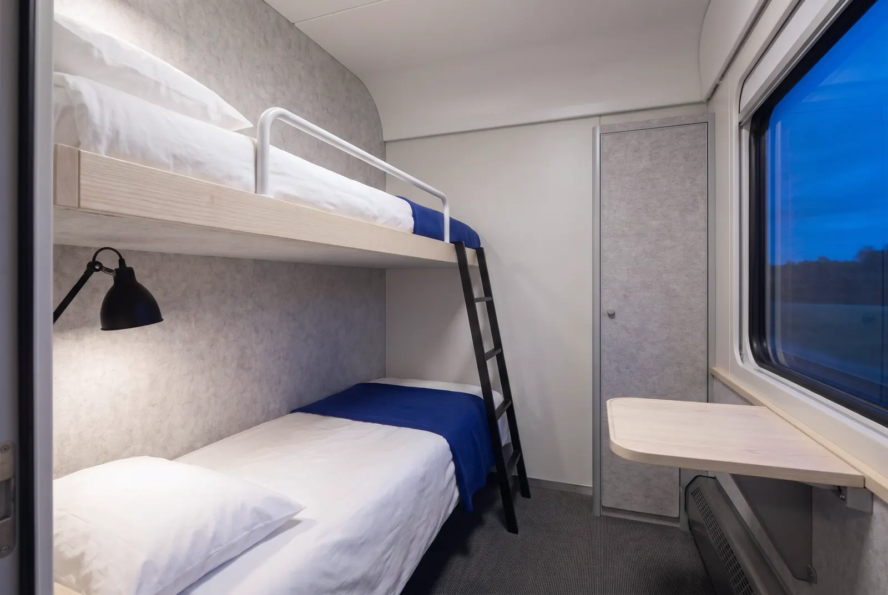
둘이 위아래 침대에서 잡니다. 혼자 넓게 써도 값은 같습니다.
198,000원, 한 칸
금·토 밤 228,000원
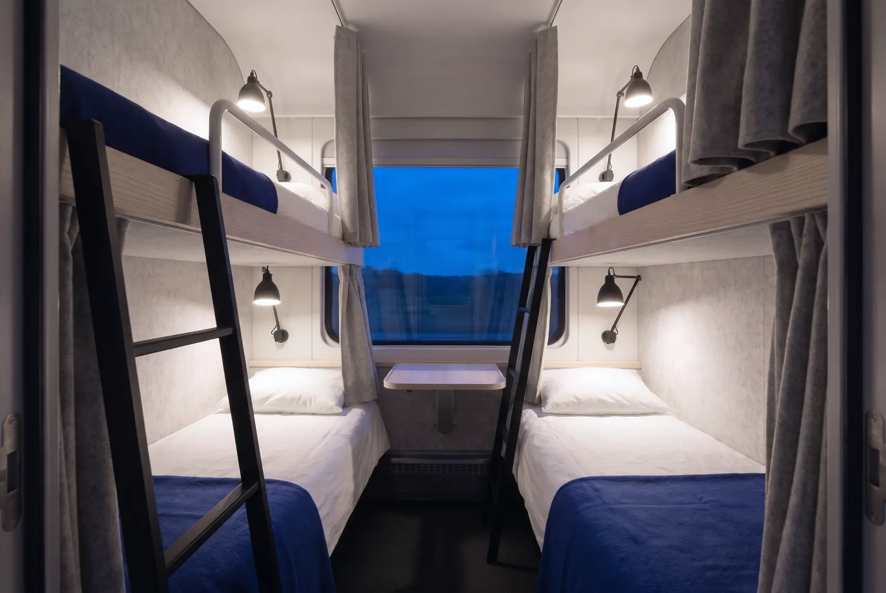
자리 하나를 삽니다. 침대마다 커튼과 독서등, 콘센트가 있습니다.
59,000원, 한 자리
금·토 밤 69,000원
고속선 대신 화물열차가 다니지 않는 옛 일반선을 씁니다. 곧고 평평한 구간을 골라 평균 시속 52 km로 천천히 달립니다. 타는 역은 자정 전에만, 내리는 역은 새벽 6시 뒤에만 섭니다.
| 역 | 높바람에서 | 1호 남쪽으로 | 2호 북쪽으로 |
|---|---|---|---|
| 높바람 | 0 km | 23:05 출발 | 07:15 도착 |
| 달무리 | 61 km | 23:56 타기만 | 06:08 내리기만 |
| 고요목 | 208 km | 02:10–02:55 멈춤, 문 닫힘 | 02:20–03:05 멈춤, 문 닫힘 |
| 이슬재 | 349 km | 05:58 내리기만 | 23:58 타기만 |
| 마파람 | 412 km | 07:05 도착 | 23:10 출발 |
높바람 시청 앞에서 마파람 시청 앞까지, 평일 저녁에 떠나는 경우를 다른 방법과 견주어 보았습니다.
40분
역까지 가는 길과 내린 뒤 걷는 길만 셉니다. 나머지 여덟 시간은 잡니다.
9kg
비행기의 8분의 1 정도입니다. 기관차는 전기로 달립니다.
85,000원
저녁 비행기와 도심 호텔 하룻밤보다 1인실이 이만큼 덜 듭니다.
시간은 지도 앱의 평일 저녁 경로 평균, 비행기는 공항 오가는 길과 수속을 포함했습니다. 이산화탄소는 연료와 전력 사용량을 승객 수로 나눈 값이고, 밤차는 지난 1년 운행 기록(평균 승차율 81%)으로 셈했습니다. 비행기 값은 지난 1년 평일 평균 96,000원, 호텔은 마파람 도심 평균 118,000원입니다.
높바람과 마파람 사이 마지막 밤기차는 2011년에 끊겼습니다. 비행기로 한 시간이면 가는 길에 여덟 시간짜리 열차를 탈 사람은 없다는 이유였습니다.
2023년, 그 열차의 객차를 정비하던 윤도경이 거꾸로 생각해 보았습니다. 여덟 시간이 아니라 하룻밤이라고 부르면 어떨까. 호텔에서 객실을 맡던 서하린과 항공 예약 시스템을 만들던 마준우가 합류했고, 셋은 폐차를 앞둔 침대 객차 열여덟 량을 사서 1년 반 동안 다시 지었습니다. 첫 열차는 2025년 10월 1일 밤에 떠났습니다.
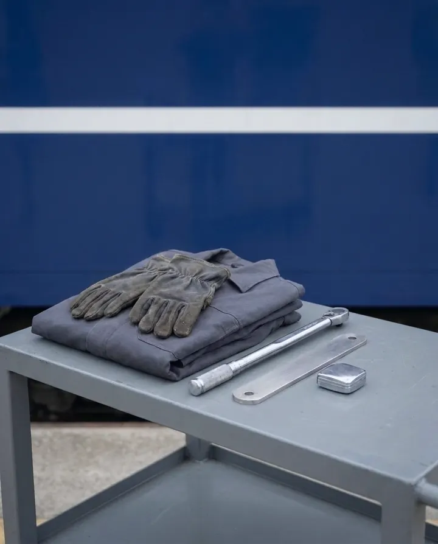
대표
철도 차량 정비 18년. 객차의 바퀴와 브레이크, 그리고 흔들림을 맡습니다.
객실과 서비스
비즈니스호텔 객실 운영 11년. 침구와 승무원, 아침 차를 맡습니다.
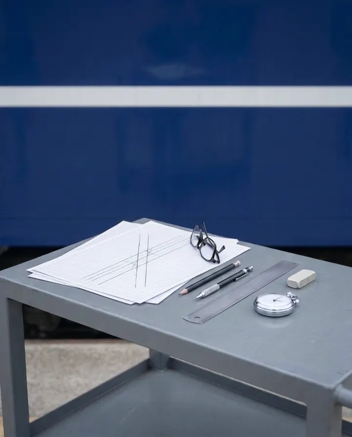
운행과 예약
항공 예약 시스템 개발 9년. 시각표와 요금, 예약을 맡습니다.
2024년 시드 투자는 개인 투자자 열한 명이 함께했습니다. 2026년 3월 시리즈 A 85억 원은 들녘벤처스가 이끌고 곧은길파트너스가 참여했습니다. 이 돈으로 2027년 봄에 세 번째 편성을 들여옵니다.
가상 회사라서 이 페이지로는 지원을 받지 않습니다.
이 예약 칸은 데모입니다. 무엇을 눌러도 아무 데도 보내지 않고, 예약도 만들어지지 않습니다.